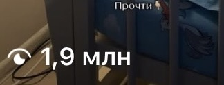

Один файл - и Claude верстает в стиле настоящего бренда, а не как получится
Библиотека готовых файлов: цвета, шрифты и правила разных брендов (Vercel, Atlassian, Nubank и другие), которые Claude Code берёт и использует напрямую при вёрстке
Что это и зачем
Claude отлично верстает: сетку, код, адаптивность под телефон. А вот дизайн придумывает сам, и почти всегда мимо. Просишь «сделай красиво», получаешь то, что выглядит как шаблон из конструктора десять лет назад
Промпт это не лечит: у агента просто нет твоего вкуса и готового визуального языка. Есть один рабочий способ - отдать ему этот язык готовым файлом
Кто-то разобрал сайты десятков реальных брендов и сложил их визуальный язык в файлы формата DESIGN.md: точные цвета, шрифты, отступы, сетка, состояния кнопок и правила «что можно, а что нельзя». Один такой файл кладёшь в свой проект, и агент собирает интерфейс в этом стиле, а не придумывает свой
Цифры на день сборки этой страницы (12.09.2026). Библиотека живая и растёт каждую неделю: если у тебя на экране цифра больше, это нормально, не ошибка
Дальше - семь шагов, как взять готовый файл и отдать его агенту
Шаг 0. Что нужно до старта
Только одно: открытый Claude Code в папке твоего проекта (сайт, лендинг, приложение - неважно что именно верстаешь)
Что это даёт: больше ничего покупать и настраивать не нужно, начинаешь прямо сейчас
Выбери бренд под свой проект
Куда нажать. Открой designmd.app/library (весь каталог с фильтрами по стилю и эпохе) или сразу designmd.app/brands (только разборы реальных компаний)
Что увидишь. Карточки: имя, категория стиля, три коротких тега и маленькое превью. На /brands - список настоящих брендов: Vercel, Atlassian, Nubank, Clerk, Mintlify, Resend, Nuxt и другие
Что это даёт. Выбираешь не абстрактный «красивый стиль», а конкретный визуальный язык, уже проверенный на живом продукте
Скачай или скопируй файл
Куда нажать. Открой карточку выбранного бренда. На странице - палитра цветов, шрифты и блок с двумя кнопками: Download DESIGN.md и Copy DESIGN.md
Что увидишь. Либо файл сохранится на компьютер, либо весь текст файла скопируется в буфер обмена - выбирай что удобнее
Что это даёт. У тебя на руках готовый текстовый файл с полным описанием стиля бренда: не картинка и не референс на глаз, а инструкция, которую агент читает буквально
Положи файл в корень проекта
Куда нажать. Сохрани файл под именем DESIGN.md в главной папке проекта, там же, где лежит файл CLAUDE.md (если такого файла ещё нет, создай пустой рядом)
Что увидишь. В списке файлов проекта появился DESIGN.md на одном уровне с CLAUDE.md, не внутри вложенных папок
Что это даёт. Claude Code читает файлы из корня проекта в первую очередь. Файл, спрятанный глубоко в подпапках, агент может не найти сам
Впиши одну строку в CLAUDE.md
Куда нажать. Открой CLAUDE.md и добавь строку:
Что увидишь. Обычная строка текста в файле, который Claude Code читает при старте каждой сессии
Что это даёт. Значок @ перед именем файла не украшение, это прямая ссылка на файл. Без него агент прочитает «DESIGN.md» как случайные буквы, а не как команду открыть файл
Дай агенту обычную задачу
Куда нажать. Попроси то, что просил бы всегда: «сделай главный экран», «собери карточку товара», «сверстай форму регистрации» - без напоминаний про стиль
Что увидишь. Агент сам подтягивает цвета, шрифты и отступы из DESIGN.md, не спрашивая, какой дизайн ты хочешь
Что это даёт. Интерфейс в выбранном стиле за минуты, а не за вечер правок и споров «нет, не то, попробуй ещё»
Проверь, что стиль реально подхватился
Куда нажать. Открой готовый экран рядом с файлом DESIGN.md и сверь на глаз: тот ли шрифт заголовков, тот ли фон кнопки, те ли отступы
Что увидишь. Совпадение или явное расхождение: цвет кнопки не из палитры файла, шрифт стандартный вместо указанного
Что это даёт. Уверенность, что дизайн-система реально работает, а не просто лежит в проекте мёртвым файлом
Если стиль не подхватился
Три вещи, которые проверить по порядку:
- Файл лежит не в корне проекта, а в подпапке - перенеси в корень, рядом с
CLAUDE.md - В строке ссылки забыт значок
@перед именем файла - без него ссылка не работает - Задача была дана агенту до того, как строка попала в
CLAUDE.md- начни новый диалог с агентом после правки файла
Где ещё взять такие файлы
Основная витрина - designmd.app. Если она недоступна или хочется больше вариантов:
designmd.directory- другой каталог того же формата, больше готовых наборов и шаблоновgithub.com/VoltAgent/awesome-design-md- открытый список файлов на GitHub, тоже просто скачиваешь нужный файл
Библиотека сейчас бесплатная
Пользоваться можно уже сегодня, без подписок и оплат. Единственное ограничение - твоё время на выбор бренда под свой проект
Что происходит с блогом, пока я собираю такие инструкции
Пишу про такие находки регулярно, и вот что это даёт блогу на нейросетях за то же время





Три рилса по миллиону и больше. Без рекламы и без команды: производство занимает минуты, время уходит на смысл
Один файл - это только начало
Я одна, в декрете, без команды и без дизайнера строю проекты на нейросетях. Сайты, карусели, обложки - всё собираю сама, через готовые визуальные референсы вроде этого файла, а не через свой вкус с нуля
Один файл закрывает вопрос дизайна одного экрана. Но если ты строишь целый продукт - сайт, карусели, весь визуальный слой бренда, одного найденного файла мало, нужна система, которая работает на все форматы сразу
На консультации разбираю, как выстроить такую систему у тебя: не под один экран, а под весь твой запуск
Напиши слово
мне в личку Telegram
НаписатьМои каналы и страницы